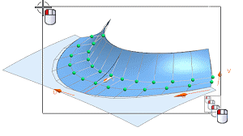
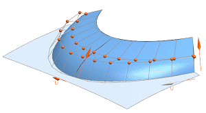

Microposition the poles
When you know a specific distance or value you want to move, rotate, or scale, you can use Microposition for finer control of the translation of poles.
-
In the Curve or Surface group, in the Pole Selection subgroup, from the Manipulate list, select Poles.
-
Click Select Object
 , then select all the displayed poles.
, then select all the displayed poles.

-
In the Microposition group, in the Step Value box, type 10.
This moves the selected poles 10 mm. in a normal direction from the faces.
-
Click the negative button two or three times to create more convex surfaces.

-
In the Settings group, click Restore Parent Face
 .
.